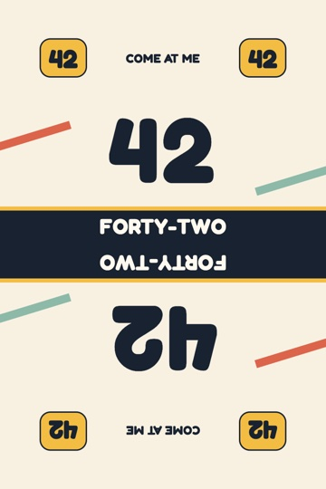
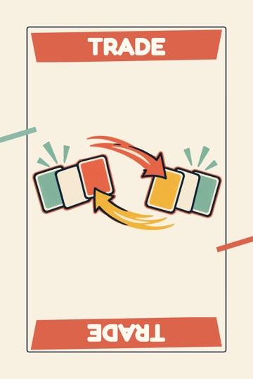
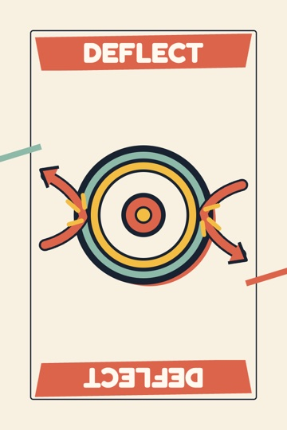

Come at
me!
Put eight cards in order, call “Come At Me,” and survive one last shot from each opponent.
Request the playable demo


The last shot.
Ben knocks Ana’s row out of order. That hit earns her a repair draw and one chance to put things right.
Clip transcript
Ana orders eight cards and calls “Come At Me.” Ben takes his free shot, trading into Ana’s last slot and breaking her sequence. The hit earns Ana a Fix-It marker. She draws a 54, puts it in the last slot, and wins with all eight cards in order.
Print the COME AT ME! rack.
Keep all eight Bridge-size cards in view. The ready-to-slice STL has the raised COME AT ME! wordmark on the front.

Try a match.
The browser prototype is available by invitation for playtesting and publisher review. Send Daniel a short request with the email address where you’d like to receive an invite.
Request the playable demo